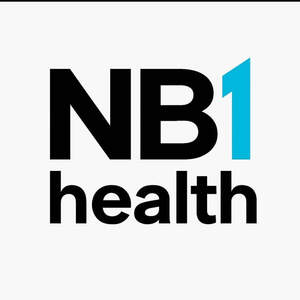

Trade Mark Journal No.2026/008 20 February 2026
UK00004336092 5 February 2026 (5,9,35,41,42)

International priority date claimed: 27 January 2026
(European Union Intellectual Property Office (EUIPO))
(019309077)
- Class 5
- Dietary supplements intended to supplement a normal diet or to have health benefits; meal replacements and dietetic food and beverages adapted for medical use; pharmaceuticals and medical preparations; sanitary preparations for medical purposes; dietetic food and substances adapted for medical use, food for babies; plasters, materials for dressings; material for stopping teeth, dental wax.
- Class 9
- Scientific, research, navigation, surveying, photographic, cinematographic, audiovisual, optical, detecting, testing, inspecting, life-saving and teaching apparatus and instruments; apparatus and instruments for recording, transmitting, reproducing or processing sound, images or data; recorded and downloadable media, computer software, blank digital or analogue recording and storage media; computers and computer peripheral devices; breathing apparatus for underwater swimming.
- Class 35
- The bringing together, for the benefit of others, of a variety of goods (pharmaceuticals and other preparations for medical purposes, apparatus and instruments for scientific or research purposes, audiovisual and information technology equipment), excluding the transport thereof, enabling customers to conveniently view and purchase those goods; such services may be provided by retail stores, wholesale outlets, through vending machines, mail order catalogues or by means of electronic media, for example, through websites or television shopping programmes; advertising, marketing and promotional services; public relations services; organization of trade fairs and exhibitions for commercial or advertising purposes; commercial management assistance services; commercial administration of the licensing of the goods and services of others; office functions.
- Class 41
- Organization of exhibitions for cultural or educational purposes, arranging and conducting of conferences, congresses and symposiums; publication of books and texts, other than publicity texts; photography; cultural, educational or entertainment services provided by amusement parks, art galleries and museums; online gaming services; education; providing of training; entertainment; sporting and cultural activities.
- Class 42
- Scientific and technological services and research and design relating thereto; industrial analysis, industrial research and industrial design services; quality control and authentication services; Design and development of computer hardware and software.
DLB Ventures
Representative: Shoosmiths LLP